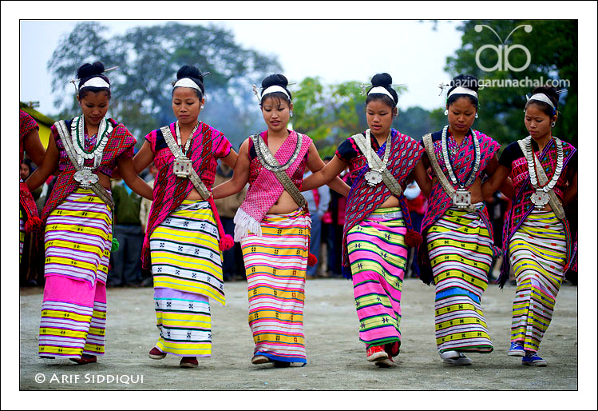
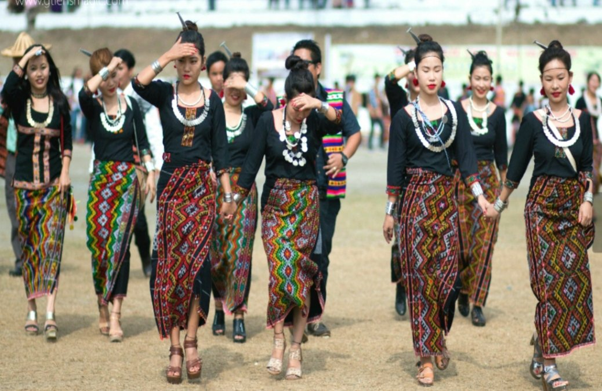
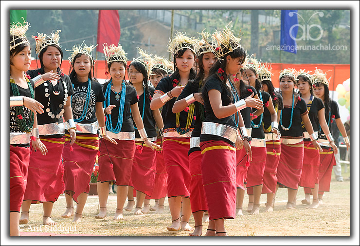
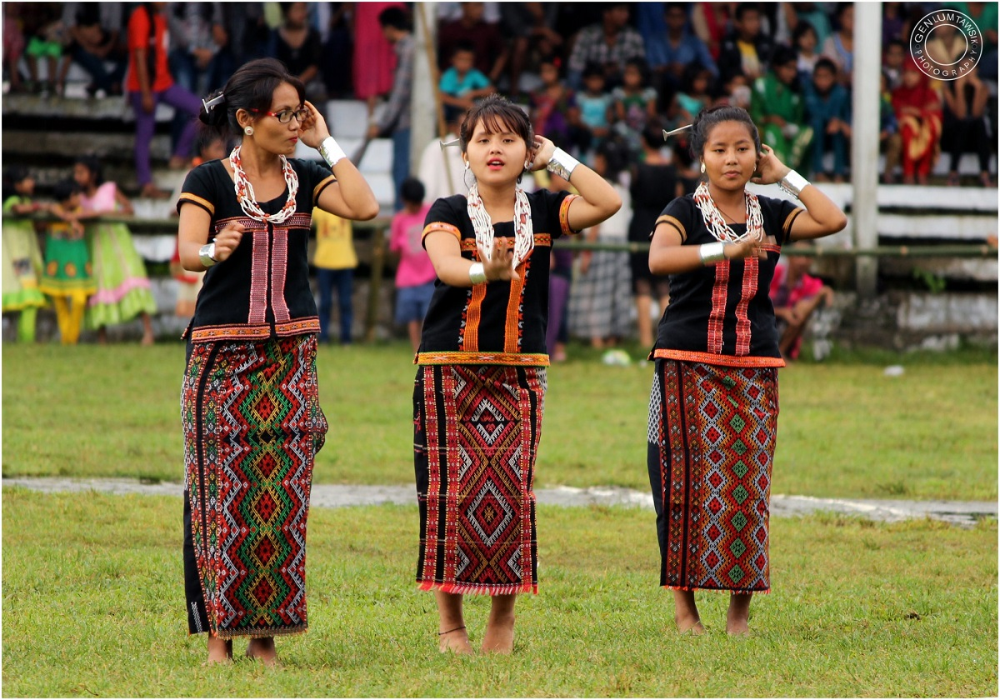
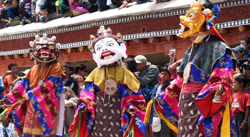
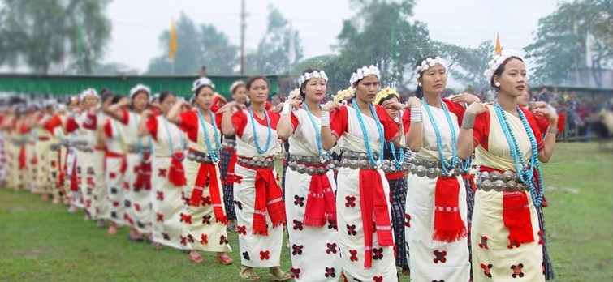
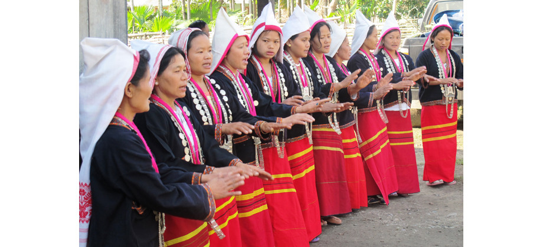

Arunachal Pradesh
- Home
- Food


- Fashion
   
- Festival
- Solung
- Nyokum
- Lossar


Lossar
It is the festival of the Monpa tribe in Arunachal Pradesh and is celebrated to welcome a new year. Monpa is the dominating tribe of Tawang and West Kemang district; therefore one can consider Lossar as one of the major festivals here. Tawang is amongst the most popular tourist attractions in North East India and visiting it during the festival is indeed the ideal time. The festival falls usually in the month of February or in early March and lasts for about 8 to 15 days during which homes are cleaned, prayers are offered, religious flags are hoisted atop each house, holy scriptures are read and lamps with butter are lit in all the houses. The local deity is also worshipped by the Monpas for the welfare of the society and the people. Losar is also the time to relish the taste of local made drinks and savour the traditional cuisine.
Nyokuml
The Ugadi Festival in Andhra Pradesh is the New Year festival that is celebrated every year as Ugadi marks the beginning of the Hindi Lunar calendar. Ugadi marks a day of joy and happiness, aspirations and hope, the belief are that this day and its joys would foreshadow the course of events for the upcoming year. - Lossar
Solung
An agriculture festival, Solung is celebrated in the month of monsoon (July /August). This 10 days festival is amongst the most famous festivals in North East India, especially celebrated by the Adi community in West Siang district, East Siang district, Lower Dibang Valley district, Upper Dibang Valley district and Upper Siang district of Arunachal Pradesh. The date for the festival is different each year and is decided by Kebang or the village council keeping the convenience of the villagers in mind and once the date is fixed the preparation of the local beer Apong starts. On the first day, the Indian Bison along with pigs are slaughtered in the early hours of the morning. On the second day, 1/3rd of the meat is distributed among the relatives; also a grand dinner feast is arranged for neighbours, women and children. On the fourth day of the festival which is also called the Oinnyad, one of family member goes to the field and sacrifices a fowl especially for ‘Kine Nane’. On the seventh day or Ekob, men assemble at the village dormitory known as ‘Mosup’ to make bows and arrows, which are then fastened on the doors of every house in the village. On the tenth and final day of the festival, village people uproot the weak plants of paddy that get spoiled by worms and insects and this process is known as Irni. This act is done in the hope that ‘Kine Nane’ (the Goddess) will drive away the worms and insects out of the fields - Nyokum
- Solung